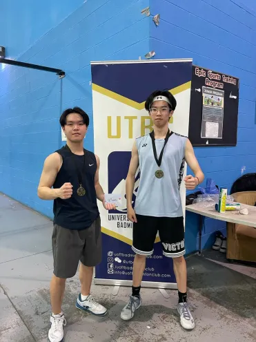

Welcome to my portfolio where I show off some of the things I've done and tell you about myself!
About Me
Hello! I'm Eason Chou, a third year Computer Engineering student at the University of Toronto. I enjoy coding and making projects, especially when I can see the fruits of my labour! I've currently taken a keen interest in front-end development, but I'm also fascinated by embedded systems, machine learning, and computer science/engineering in general. I have other interests which you can read about in my Hobbies & Interests section.
Fun Facts
I've made the Dean's Honour List four semesters in a row and counting! (CGPA: 3.67, ~82% average)
I was also a bronze medalist in the B.C. Provincial Badminton Championships
My Projects
I love to make things using the skills I've learned. Please take a look!
A Rhythm Game similar to Piano Tiles made in the C language for the DE1-SoC Board.
Conducted research and wrote reports about game internals and potential strategies
Debugged A* pathfinding heuristics across large codebase
Implemented and tested features for A* targeting
Tutor at Success For All Canada , where I honed my communication skills by teaching mathematics, physics, coding to high-school students.
Used visual examples and analogies to clearly explain concepts
One-on-one teaching using probing questions to guide students
SLSS Badminton Team Captain
Coached team members to improve their techniques, mechanics, and strategies
Organized and led team practices
Hobbies & Interests
I'm an avid badminton player who used to compete provincially. I've lead my school team to third place in the province and even won a few tournaments here and there.

Me and my partner Jason; we won first place at a badminton tournament.
I enjoy working out weekly for both my physical and mental health.
I love martial arts! I've done Muay Thai, Boxing, and Sanda.
Music is one of the most important things in my life. I used to play clarinet in my school band and jazz club. I can also play a bit of guitar. I love many genres of music like Jpop, R&B, Jazz, and many more.
Eating delicious meals and enjoying desserts is what I live for, and I also like to cook when I have time!